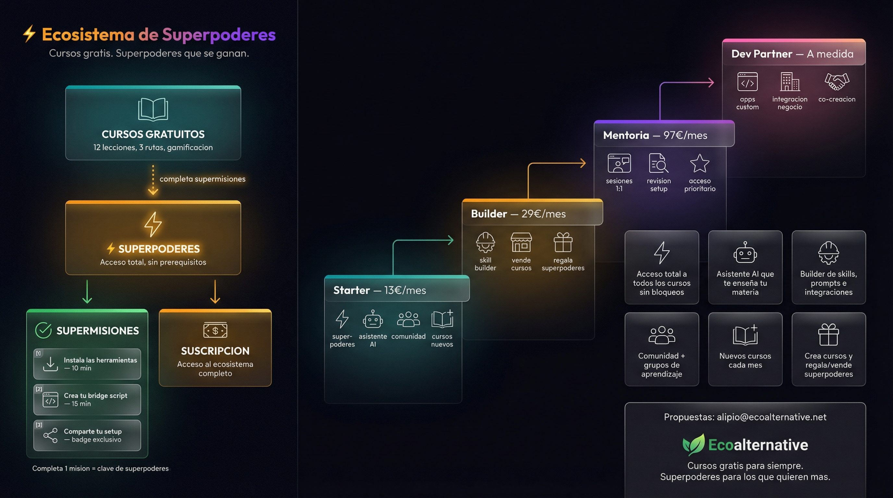

El cerebro que aprende + el cuerpo que ejecuta. Cada uno para lo suyo, juntos sin fusionarse. 12 microlecciones gamificadas.

Claude Code instalado y funcionando. Git disponible en terminal.
~/.claude/skills/ (se integra dentro de Claude Code, no es un proceso aparte)
# 1. Clonar el repositorio git clone https://github.com/Luispitik/synapis.git # 2. Ejecutar el instalador cd synapis ./install.sh # Linux/Mac install.bat # Windows # 3. Verificar (abre Claude Code en cualquier proyecto) # Synapis se cargara automaticamente y mostrara el launcher
Synapis se carga automaticamente al iniciar Claude Code. No necesitas ejecutar nada extra. Si ves el launcher con opciones [1] Skills on Demand [2] Skill Picker [3] Freestyle, esta funcionando.
Python 3.10+ y Git. Node.js recomendado para browser tools.
Windows: %LOCALAPPDATA%\hermes\ | Linux/Mac: ~/.hermes/
# LINUX / MAC (instalador oficial) curl -fsSL https://raw.githubusercontent.com/NousResearch/hermes-agent/main/scripts/install.sh | bash # WINDOWS PowerShell irm https://raw.githubusercontent.com/NousResearch/hermes-agent/main/scripts/install.ps1 | iex # WINDOWS Git Bash (manual) cd $LOCALAPPDATA && mkdir hermes && cd hermes git clone --depth 1 https://github.com/NousResearch/hermes-agent.git cd hermes-agent && python -m venv venv source venv/Scripts/activate # o venv/bin/activate en Linux pip install -e ".[cron,cli,pty,mcp,messaging]" # Configurar provider Anthropic # Edita config.yaml: provider: "anthropic" # Edita .env: ANTHROPIC_API_KEY=tu-clave-aqui # Verificar hermes doctor
Necesitas una ANTHROPIC_API_KEY para usar Hermes con Claude. Consiguela en console.anthropic.com/settings/keys. Hermes funciona independiente de Claude Code — son procesos separados.
Cero. Synapis vive en ~/.claude/, Hermes en su propio directorio. No comparten puertos, procesos ni configuracion.
Synapis hereda la key de Claude Code. Hermes usa su propio .env. Misma key, dos sitios.
# === PASO 1: Instalar Synapis === git clone https://github.com/Luispitik/synapis.git && cd synapis && ./install.sh # === PASO 2: Instalar Hermes === curl -fsSL https://raw.githubusercontent.com/NousResearch/hermes-agent/main/scripts/install.sh | bash # === PASO 3: Verificar ambos === hermes doctor # Hermes OK? # Abre Claude Code → Synapis carga solo # === PASO 4: Scripts bridge (opcional) === # ~/bin/hermes-personal → chat con Hermes # ~/bin/synapis-project → Claude Code + Synapis
Orden recomendado: Instala Synapis primero (mas rapido, no necesita API key propia). Luego Hermes. Luego conectalos con bridge scripts si quieres (leccion 9 del curso).